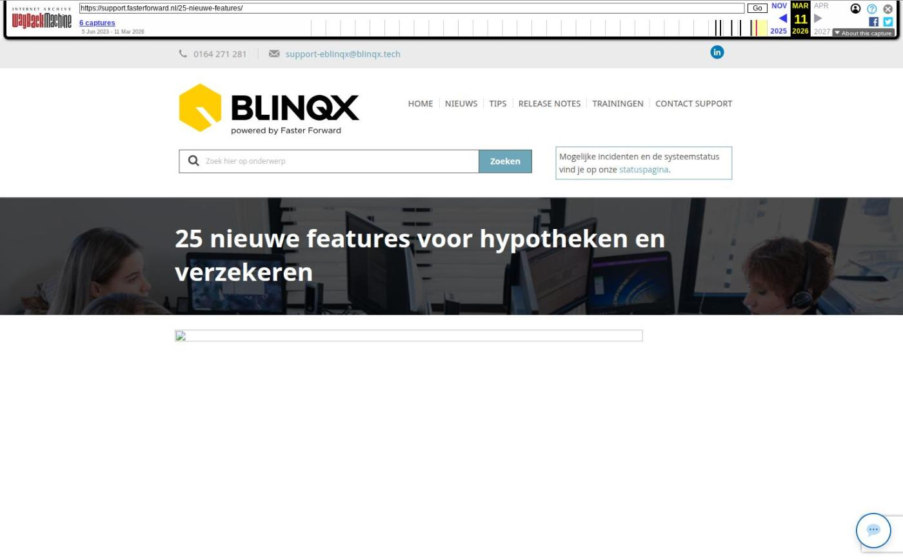

25 nieuwe features voor hypotheken en verzekeren

Tekstinhoud
Op dinsdag 25 april wordt Elements weer verbeterd en uitgebreid met nieuwe features! Deze release bevat uitbreidingen en optimalisaties voor advieskantoren en serviceproviders.
Advieskantoren
Kalender is vernieuwd
Taak en afspraak pop-up zijn vernieuwd
Aanspreken met u of jij
Wachtwoorden en two factor resetten
Nieuwe SMART selectie: Zakelijke klanten met of zonder specifieke producten
Nieuwe features in Uwkluis
Verzekeren
Aplaza koppelpop-up vernieuwd
Status ADN batch meer inzichtelijk door kleuren
Eenvoudig verzekeringen vergelijken en afsluiten via VKG
Hypotheken
HDN uitgaand mislukt uitgebreid
Validatiebericht zichtbaar bij de HDN berichten onder product
Maatschappijstatus verandert alleen bij binnenkomst DA bericht
Stukken pas verzenden wanneer alle DA berichten zijn verwerkt
Zakelijk inkomen onder de dienst
Rappeltaak op juiste moment volgens geldverstrekker
Studieschuld DUO ophalen via Ockto
IA bericht nu ook te versturen naar Florius
Serviceproviders
Formules raadplegen bij het maken en verzenden van HDN berichten
Offerte (OX) berichten doorsturen naar intermediair
Stukkenlijst serviceprovider
Overige verbeteringen
Advieskantoren
Kalender is vernieuwd
De kalender is vernieuwd! Zo voldoet deze weer aan de actuele standaarden en gaan we mee in de ontwikkelingen. Daarnaast oogt het beeld frisser en rustiger. Zo heeft de kalender de volgende voordelen:
De kalender werkt makkelijker en sneller
Datums, personen en tijden zijn verduidelijkt
Verversen en afdrukken doe je rechtsboven
Functioneel is er verder niets veranderd. Je kunt de afspraken op de bekende manier aanmaken.
Taak en afspraak pop-up zijn vernieuwd
Ook de taak en afspraak pop-ups zijn vernieuwd! Deze zijn opgefrist en voldoen aan de actuele standaarden. De taken kunnen op dezelfde manier worden aangemaakt. Het volgende is veranderd:
Afspraken opslaan of annuleren doe je rechtsonder in de pop-up
Afspraken sluiten doe je rechtsboven in de pop-up
Aanspreken met u of jij
Het is nu makkelijker om klanten in een bepaalde aanspreekvorm, formeel of informeel, aan te schrijven. Je kunt nu namelijk per dossier instellen of je klanten met 'je' of 'u' wilt aanspreken. Dit kan je al instellen bij het aanmaken van een dossier of je geeft dit aan in het klantdossier onder het tabblad CRM – Aanspreekvorm. In e-mails en teksten kan je gebruik maken van tags die deze aanspreekvorm ophalen. Wil je dat wij deze voor je inrichten? Stuur dan een e-mail naar support@fasterforward.nl.
Wachtwoorden en two factor resetten
Vanaf nu zelf wachtwoorden en two factors resetten vanuit één overzicht! Via Gebruikersaccounts – Overzicht is het mogelijk voor beheerders om per gebruiker het wachtwoord en/of MFA te resetten. Ben je een beheerder en wil je dit gebruiken? Stuur dan een e-mail naar support@fasterforward.nl.
Nieuwe SMART selectie: Zakelijke klanten met of zonder specifieke producten
Om meer kansen te halen uit je bestaande zakelijke portefeuille is er een nieuwe SMART selectie toegevoegd, namelijk Zakelijke klanten met of zonder specifieke producten. Deze soortgelijke selectie was al beschikbaar voor particuliere klanten. Benader deze klanten bijvoorbeeld om te vragen of hun producten nog actueel zijn of om aanvullende diensten aan te bieden.
Nieuwe features in Uwkluis
Er zijn diverse ontwikkelingen doorgevoerd in Uwkluis.
Traject hypotheekaanvraag zichtbaar
In Uwkluis is het zichtbaar op welk moment de hypotheekaanvraag zich in het traject bevindt.
Klantprofiel opstellen
Uitermate goed voorbereid het adviesgesprek in? Inventariseer de doelstellingen van klanten, hun kennis en ervaring, financiële positie en risicobereidheid eenvoudig met het klantprofiel in Uwkluis. Klanten vullen een heldere vragenlijst in die als PDF in het klantdossier wordt opgeslagen.
Vanuit Elements, via de workflow, is het mogelijk om een klantprofielverzoek op te starten. Wil je hier gebruik van maken stuur dan een e-mail naar support@fasterforward.nl.
Contract/polisblad direct zichtbaar onder het product
Een polisblad kan als contract aangemerkt worden. Dit contract(document) is in Uwkluis direct zichtbaar onder het product.
Brondata ophalen
In Uwkluis kan je brondata ophalen door middel van Veilig Ophalen of Ockto. De brondata vanuit Veilig Ophalen kan alleen gedeeld worden met Fastlane. Brondata vanuit Ockto kan gedeeld worden met de bekende adviespakketten.
Kinderen zichtbaar in uwkluis
Kinderen worden nu ook getoond in uwkluis.
App voor uwkluis beschikbaar
Er is voor je klanten nu ook een uwkluis app beschikbaar. Zo kan je, indien ingericht, ook pushmeldingen versturen naar de mobiele telefoon of tablet van je klanten.
Meer informatie
Verzekeren
Aplaza koppelpop-up vernieuwd
Het uiterlijk van de Aplaza pop-up is nu duidelijker en handiger. Dit is nu de bekende pop-up die ook gebruikt wordt om e-mails te koppelen. Zo kan je nu in de pop-up direct doorklikken naar pakketten, polissen (als je werkt met mutatievoorstellen) en schademeldingen.
Als het bericht een schademelding is, krijg je gelijk de zoekvelden om te zoeken naar de bijbehorende schademelding. Ook zie je nu in het Aplaza bericht zelf als het bericht een schademelding betreft.
Status ADN batch meer inzichtelijk door kleuren
Wanneer je werkt met ADN 3.0 (directe boeking op RC maatschappij) wordt nu in het overzicht van de ADN module in één oogopslag duidelijk welke actie als laatst in de batch is uitgevoerd. Dit zie je doordat een regel een bepaalde kleur heeft. Rechtsboven in de legenda staat wat elke kleur betekent. Zo kan je zien of in de batch alle controle journaalposten zijn aangemaakt en/of er tussenpersoon incasso boekingen of facturen zijn aangemaakt.
Eenvoudig verzekeringen vergelijken en afsluiten via VKG
In een klantdossier kun je nu klantgegevens vanuit Elements exporteren naar VKG. Hierdoor hoef je geen klantgegevens handmatig over te typen in het extranet van VKG om verzekeringen af te sluiten, aan te passen of te beëindigen. In VKG kan je verzekeringen vergelijken en offertes aanvragen.
Zodra je een verzekering hebt aangepast of een nieuwe verzekering hebt aangevraagd, komt deze binnen in de "Externe berichten" inbox in je Elements omgeving. Vervolgens verwerk je dit bericht op de gebruikelijke manier. Lees er hier meer over. Wil je gebruik maken van de koppeling? Stuur dan een e-mail naar support@fasterforward.nl.
Hypotheken
HDN uitgaand mislukt uitgebreid
In HDN uitgaand mislukt kan je nu nog beter zien waarom het niet gelukt is om een HDN bericht te verzenden. De kolom 'Oorzaak fout' is toegevoegd aan het overzicht, waarin je kan zien of het een storing of validatiefout betreft. Ook worden de berichten waarop een VX foutmelding is teruggekomen getoond in het overzicht. Door middel van het logfile-icoon opent er een pop-up waarin je ziet wat de specifieke validatiefout is (zie printscreen bij het volgende punt).
Validatiebericht zichtbaar bij de HDN berichten onder product
Ook onder het product – tabblad HDN kan je het validatiebericht zien in de pop-up die geopend wordt via het logfile-icoon. Zo wordt het direct duidelijk waarom het bericht niet verstuurd kan worden. Dit logfile-icoon onder het product is alleen voor beheerders toegankelijk.
Maatschappijstatus verandert alleen bij binnenkomst DA bericht
Wanneer er een documentaanvraag (DA) bericht vanuit de geldverstrekker wordt ontvangen, is het niet meer mogelijk om de velden 'Beoordeling maatschappij', 'Toelichting beoordeling maatschappij' en 'Datum beoordeling maatschappij' te bewerken in het stuk. Deze velden zijn uitgegrijsd. Zo voorkom je dat je de beoordeling van de maatschappij handmatig overschrijft.
Stukken pas verzenden wanneer alle DA berichten zijn verwerkt
Geldverstrekkers vragen documenten op met HDN. Het kan voorkomen dat het niet langer nodig is om een stuk aan te leveren. De geldverstrekker stuurt dan een nieuw DA bericht met daarin de juiste status, bijvoorbeeld vervallen. Om te voorkomen dat het stuk toch wordt verstuurd, is het pas mogelijk om stukken te verzenden (DX bericht) als alle DA berichten voor het betreffende dossier verwerkt zijn. Staan er nog DA berichten in de HDN inbox in de wachtrij dan zal de knop om de stukken te verzenden verborgen zijn.
Zakelijk inkomen onder de dienst
Het aanvragen van een zakelijk inkomen is verplaatst. Dit doe je nu onder de dienst in plaats van de hypotheek. Hierdoor is er onder de dienst een tabblad HDN bijgekomen. Zo hoef je niet meer een hypotheek in het dossier te hebben om een aanvraag zakelijk inkomen op te starten. Oude aanvragen kan je nog terugzien onder de hypotheek.
Het aanvragen van een zakelijk inkomen bevindt zich nog in een testfase. Hier lees je er meer over.
Rappeltaak op juiste moment volgens geldverstrekker
Vanaf nu is het mogelijk om rappeltaken voor bijvoorbeeld het ontvangen van renteaanbod en hypotheekaanbod af te stemmen op de doorlooptijden van de geldverstrekkers. Hiervoor is de module Gemiddelde doorlooptijden gemaakt. Hierin kan je per geldverstrekker aangeven wat de doorlooptijden zijn voor het renteaanbod, hypotheekaanbod, 1e akkoord stukken en 2e akkoord stukken. Verander jij de doorlooptijden in deze module dan houdt Elements er in alle aanvragen rekening mee. Op deze manier worden de rappeltaken op het juiste moment aangemaakt.
Om gebruik te maken van deze module moeten de (hypotheek)workflows aangepast worden. Stuur hiervoor een e-mail naar support@fasterforward.nl. Een consultant zal dan contact met je opnemen om dit verder in te richten.
Studieschuld DUO ophalen via Ockto
Vanaf nu wordt de studieschuld van je klanten opgehaald met een Ockto verzoek vanuit Elements. Nadat je klant zijn gegevens aanlevert via de Ockto app, zijn de DUO gegevens vanuit Elements door te sturen naar het adviespakket. Zo kan de schuld worden meegenomen om de hypotheek te berekenen.
IA bericht nu ook te versturen naar Florius
Naast Aegon is het nu ook mogelijk om een informatie-aanvraag-bericht te versturen naar Florius. Florius stuurt naar aanleiding van dit bericht de actuele hypotheekgegevens (IX bericht) terug. Dit bericht verwerk je in Elements vanuit de HDN inbox, waardoor de hypotheekkaart van je klant weer up-to-date is.
Serviceproviders
Formules raadplegen bij het maken en verzenden van HDN berichten
Bij het verzenden van HDN berichten wordt er gebruik gemaakt van één overkoepelend HDN certificaat. Uiteraard moet wel duidelijk zijn bij welk kantoor/intermediair de aanvraag hoort. Hierdoor wordt bij het maken en verzenden van een HDN bericht gekeken naar de formule. Doordat de formule aan een kantoor is gekoppeld, is het duidelijk bij welk label de aanvraag is gedaan en met deze gegevens wordt het HDN bericht gevuld. Zo is het ook mogelijk om aanstellingsnummers aan een formule te koppelen, zodat het juiste aanstellingsnummer wordt meegestuurd in het bericht.
Offerte (OX) berichten doorsturen naar intermediair
Het is mogelijk om een offerte (OX) bericht direct door te sturen naar de intermediair. Dit kan vanuit de workflow. Dan wordt het meest recente offerte bericht doorgestuurd. Ook is het mogelijk om een ouder offertebericht te verzenden. Dit kan je doen vanuit het tabblad HDN onder het betreffende product.
Stukkenlijst serviceprovider
Er is naast het bestaande stukkenlijst tabblad ook een extra tabblad toegevoegd voor de stukkenlijst serviceprovider, namelijk 'Stukkenlijst Serviceprovider'. In dit tabblad heb je een overzicht van de stukken die verzonden zijn naar het intermediair en de geldverstrekker. Ook kan je vanuit hier de status van de stukken aanpassen en stukken verzenden.
Overige verbeteringen
In uitzonderlijke gevallen kon het voorkomen dat het HDN aanvraagvolgnummer/HDNdossierUuid in een HDN bericht niet uniek was. Berichten met een niet uniek HDN aanvraagvolgnummer/HDNdossierUuid worden niet meer verzonden. Deze komen in de uitgaand mislukt inbox te staan.
Documenten die via Aplaza worden verstuurd, kunnen aangemerkt worden als contract. Hierbij is het belangrijk dat bij het soort document in Soort documenten beheer 'Aanmerken als contract' staat aangevinkt.
Wanneer er vanuit een e-mail een taak wordt aangemaakt en de bijlagen worden onder deze taak opgeslagen dan worden deze documenten automatisch als soort document 'Anders, nl' aangemerkt.
Het kon voorkomen dat een Uwkluisdocument dubbel in het tabblad Documenten kwam te staan. Dit is verholpen, waardoor het document er maar één keer in komt te staan.
We hebben een optimalisatie doorgevoerd op het tonen van de e-mails. Soms werd niet alle informatie uit de e-mail weergegeven, bijvoorbeeld een wachtwoord of toegevoegde tekst. Deze wordt nu zoveel mogelijk getoond.
Wanneer je werkt met ADN 3.0 (directe boeking op RC maatschappij) dan wordt het blok 'Vergoedingen' niet meer rechts in de productkaart van verzekeringsproducten getoond.
Producten van Triodos Bank Hypotheken zijn via de updateknop aangeboden, waardoor in enkele klikken de producten toegevoegd kunnen worden.
In Soort documenten beheer zijn de documenten met het protocol HDN up to date gemaakt. Verouderde HDN documenten hebben het protocol Algemeen gekregen en nieuwe documenten met het HDN protocol zijn toegevoegd.
Geplaatst op 21 april 2023 (Laatste update: 25 april 2023)
Laatste 5 releasenotes
Verbeteringen gespreksopname en onder de motorkap »
Verbeteringen onder de motorkap en gespreksopnames »
HDN release: afscheid van HDN certificaten »
Verbeterde verwerking van grote e-mailvolumes via Office 365 en voorbereiding HDN »
Nu zelf schade- en levensverzekeringen omnummeren »